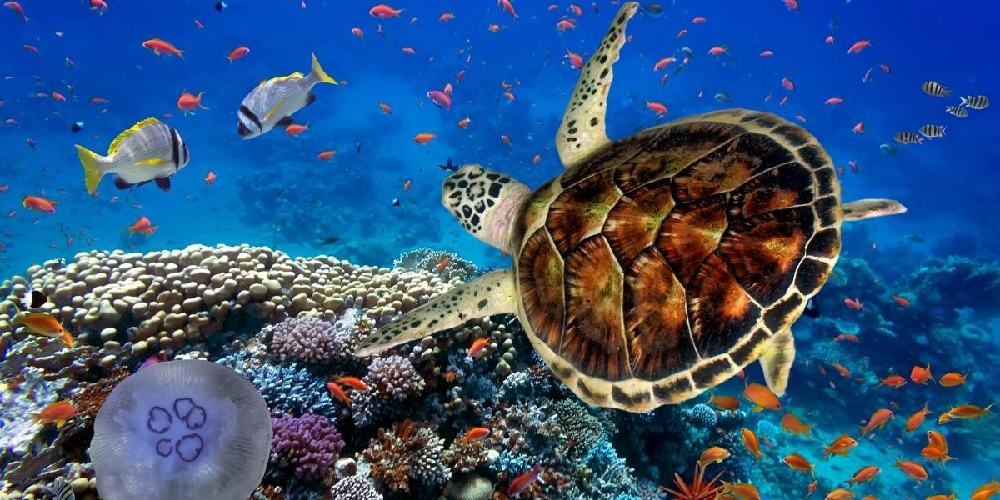
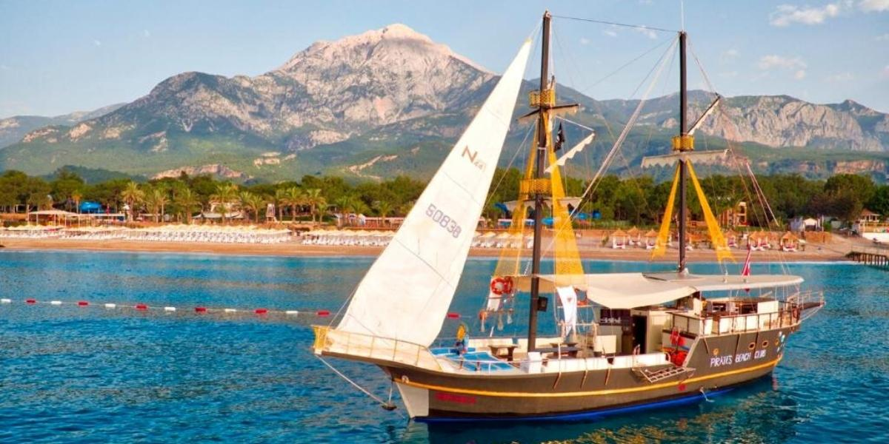
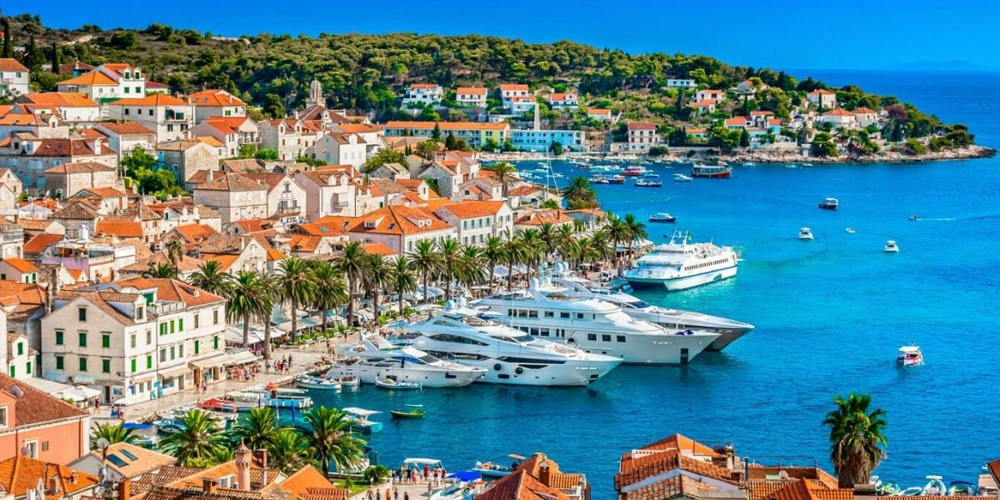
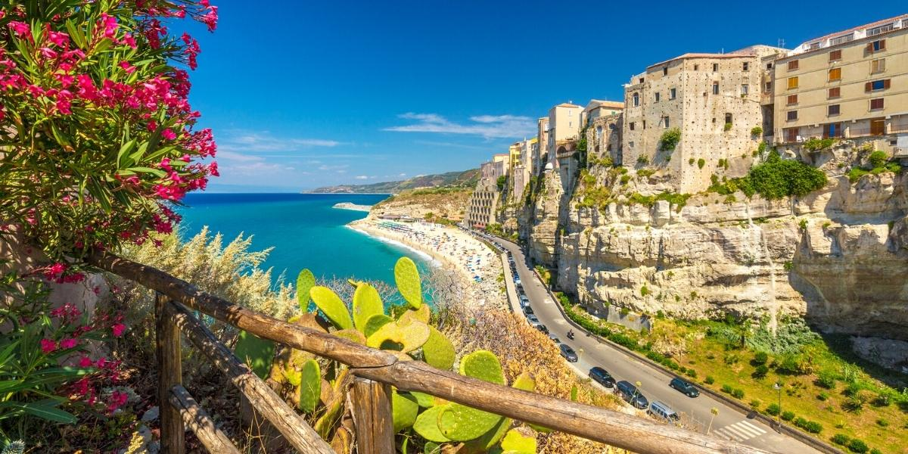

Червоне море
Надзвичайна краса його підводного світу вражає і закохує в себе навіть тих, хто завжди був байдужим до рибок в акваріумах. Як тільки ви вперше зануритеся під воду з маскою чи аквалангом, опинитеся в різнобарвному світі дивовижних морських мешканців усіх форм і розмірів! Саме заради цього казкового видовища туристи і їдуть на Червоне море. А так як це ще й найтепліше море планети (температура води там ніколи не опускається нижче +20 градусів), то купатися можна впродовж всього року. Пам’ятайте про це, коли плануватимете свій відпочинок взимку на морі, хоча найкращим сезоном тут вважається осінь і весна. Радимо обирати курорти Єгипту (Шарм-ель-Шейх, Хургада, Макаді-Бей, Сахль-Хашиш та інші), на яких вас чекатимуть комфортні готелі «Все включено». Також розгляньте курорти Йорданії (Акаба) або Ізраїлю (Ейлат).
Середземне море
Його кришталеві води омивають собою відразу три континенти: Європу, Африку і Азію! Море доволі велике, тому географи умовно розділяють його на декілька частин: Егейське, Тірренське, Іонічне, Адріатичне, Балеарське та інші. Найбільш популярними курортами середземноморського узбережжя є турецькі – Сіде, Белек, Кемер, Анталія та інші. Саме там розташовані найкращі готелі, що працюють за концепцією «Все включено» і пропонують безтурботний відпочинок з комфортним проживанням і смачним харчуванням. Така відпустка ідеально підійде тим, хто планує відпочинок з дітьми на морі, адже все необхідне завжди буде під рукою. Не менш цікавою буде ваша відпустка на європейських курортах Середземного моря – у Франції, Італії, Греції, Іспанії, а також на Кіпрі та в Тунісі.
Адріатичне море
Ця частина Середземного моря користується заслуженою популярністю, адже тут гармонійно поєднуються кришталево-прозорі води, багато зелені та неймовірні краєвиди на Балканські гори! Узбережжя Адріатики, на якому розташовані Хорватія, Чорногорія, частина Італії, Словенія та Албанія, і справді дуже красиве. Завдяки затишним курортам високого рівня та фантастичним краєвидам його просто обожнюють закохані пари! Якщо вас цікавить романтична поїздка на море, обирайте саме цей напрямок. Але врахуйте, що купальний сезон тут триває лише з кінця травня до середини осені – це море прогрівається довше, ніж інші.
Іонічне море
Надзвичайна прозорість та неймовірний відтінок його води назавжди залишаться у ваших спогадах! Іонічне море омиває Балкани та Апенніни, а саме південну частину Італії (Апулія, Сицилія, Калабрія) та західну Грецію (півострів Пелопоннес). Крім чудових пляжів та розкішних краєвидів, місцевою особливістю є велика кількість старовинних замків, особливо в Калабрії. А ще тут надзвичайно смачна середземноморська кухня та першокласні вина!
Егейське море
Хто одного разу відпочивав на Егейському морі, той закохався в нього назавжди! Вода тут переливається усіма відтінками блакиті, а сотні великих і малих островів створюють неповторні краєвиди. Егейське море омиває береги Греції (в тому числі її найбільші острови Кріт та Родос), а також Туреччини (курорти Мармаріс, Бодрум, Фетхіє та інші). Пляжі тут переважно галькові, трапляються кам’яні та піщані. Вибір готелів величезний, а ще однією перевагою цього регіону є численні історичні пам’ятки, які ваблять своєю таємничістю.